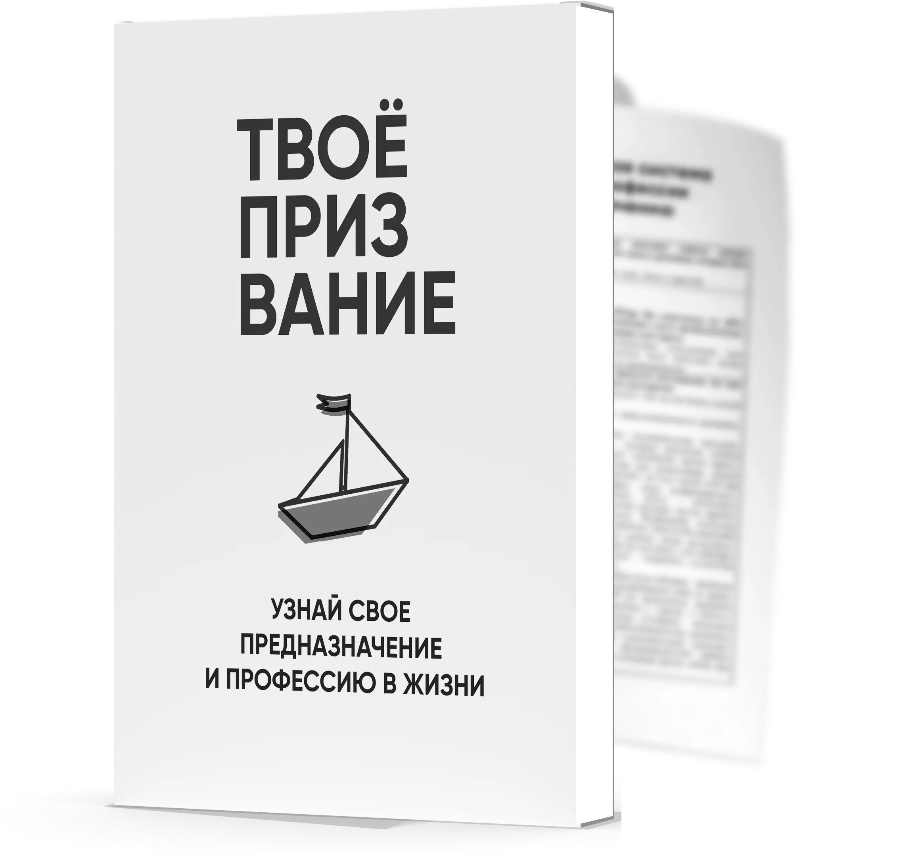

Натальная карта
для выбора пути
и предназначения
Закажите натальную карту профессий —
это не мистицизм, а аналитика
Уникальный расчёт не имеющий аналогов
Скидка 30% до 20 декабря
Предназначение
В обычную версию входит
В обычную
версию входит

Призвание
Жизненное предназначение
Профессии
Которые хорошо подойдут, принесут удовольствие и доход
Характер
Ваших сильных сторон
Таланты
Определение главного таланта для максимальной духовной реализации.
Мечты
Расчёт покажет нереализованные мечты, для их реализации.
Задачи рода
Для чего пришли в свой Род, как они вас поддерживают и другое...
2990 ₽
Предназначение
В расширенную версию входит
Все пункты «обычной»
версии расчёта
Узнаете самое благоприятное время для карьеры
Самое благоприятное время для семейной жизни
Возраст души и на каком уровне развития находится она
Самореализация по самым благоприятным годам жизни
Финансовый потенциал. В какое время легче всего, приходят деньги, и когда удачливы в финансовых вопросах и другое...
4990 ₽ 6990 ₽ -30%
Комплексный расчёт
В максимальную версию входит
Все пункты «обычной», и «расширенной» версии
Какие подходят люди для партнерства и дружбы
Особенности мышления, к какой категории людей относитесь
Узнаете второстепенный путь жизни, это сценарий жизни нужен, чтобы могли отдохнуть от основного пути
Узнаете, как вас видят окружающие
Как вы проявляете себя в стрессовой ситуации
Духовные дни рождения. У каждого человека есть дни, когда за нами пристально наблюдают Высшие Силы. Это те дни, когда добро возвращается вдвойне. Дни рассчитываются на год.
6990 ₽ 11990 ₽ -42%
Премиальный расчёт
В максимальную + здоровье входит
Все пункты «обычной», «расширенной» и «максимальной» версии
Узнаете самое благоприятное время для карьерыОпределение вашего основного пути, к чему нужно придти в жизни
Прогноз с рекомендациями по здоровью на год и на месяц
Основные уроки, которые необходимо решить. Узнаете, чего не хватает
Получите ответ на главный вопрос: «почему сложно найти своё предназначение».
Рекомендации по иммунитету, здоровью на год и на месяц
Общие рекомендации и другое...
9990 ₽ 26990 ₽ -63%